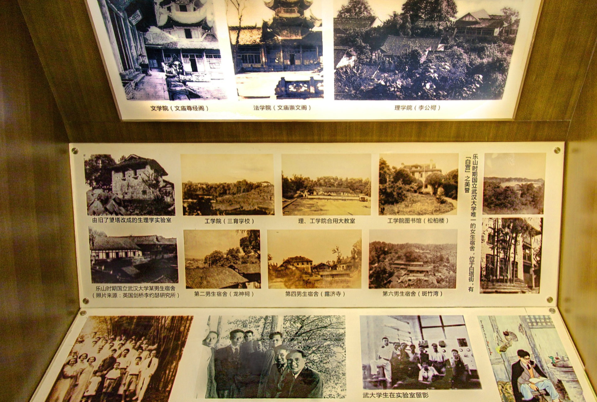

武汉大学老图书馆，简称老图——被看作武汉大学的标志性建筑和精神象征。这里不仅有藏书，有自习室，也是珞珈讲坛的主讲地。2013年武汉大学120周年校庆之际，老图书馆成为武汉大学校史馆



武汉大学老图书馆，简称老图——被看作武汉大学的标志性建筑和精神象征。这里不仅有藏书，有自习室，也是珞珈讲坛的主讲地。2013年武汉大学120周年校庆之际，老图书馆成为武汉大学校史馆
“百年沧桑”展厅位于地下一楼,展示了武大2000年合并前的历史,包括图片500余张,实物20余件。
“世纪华章”展厅位于地上五楼,展示了武大2000年合并后十余年来的办学成绩,展示照片400余张,另有近年来学校取得的教学、科研重要成果获奖证书、著作及实物600余件。
大厅为“珞珈黉宫”专题展厅,展示了武汉大学自20世纪20年代末以来在武昌珞珈山地区近百年的校园建设历程,包括历史图片200余张,实物10余件;